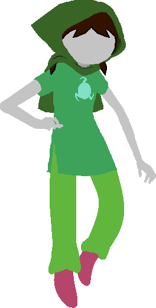

Back to SBURB SIM 2.0

FAQ
- How do I contact you?
My Tumblr is here and apparently that has an email address of jadedResearcher@yahoo.com.
- The simulation isn't working!
First, make sure your browser is compatible with HTML5 canvas images. Try the OC Generator, as it uses the same rendering engine, but on a much smaller scale. If you see things like Interests and Chat Handles, good news: Your browser is just slow and is taking awhile to download the images, but it IS compatible with HTML5 canvases (the text is a canvas on that page as well as the sprites). Refreshing the page a few times should get the images into your cache and speed things up. If you see nothing but drop down menus and check boxes, your browser does not support HTML5 canvases. Sorry.
Okay, if the OC Generator is working good for you, but the simulation still isn't: We have found a bug. It could be a small bug that only happens in the one session (gotta feel bad for those players), but it could also be a huge bug that effects EVERY session for your browswer. Refresh the page a time or two and see if you ever see anything. If you don't, please let me know what browser you're using (both the name and the version number) and I'll see if I can track that huge bug down.
You can probably still view the 1.0 sim, though. And if you can't even see THAT, then we REALLY have a problem.
- I think I found a bug!
I welcome bug reports (see above for how to contact me), but just be warned that not every bug is a priority for me. Or even something I consider a bug? Shenanigans are my favorite hand-wavey explanation for why things happened weirdly. For example, on the rare occasion that a corpse texts someone, I just imagine them tragically texting their best friend as they bleed out from Jack-related stabbings. Of course, sometimes corpses are a BIT more lively than that, fighting bosses and corpse smooching other corpses. That's probably a bug. Use your judgement.
- I think I found a typo!
Okay, but, like, are you SURE it's a typo? Is it a refrance (which is itself a reference)? Or is it a character's quirk? This entire thing is an exercise in pissing automatic spellcheckers off. If you're sure it's a typo, feel free to contact me (see above for how to contact me). For example, somebody pointed out that I had been spelling (and pronouncing!!!) "carapacian" as "carpacian". D'oh!
- I have a suggestion!
Awesome! Let me know (see above for how to contact me), but just be warned that I'm sorta doing this as a hobby. My primary target audience is myself (and a hypothetical past version of myself who wished something like this existed). I might think your idea is cool, but be all like: "Yeah, but that sounds HARD! And...kinda...boring to actually code, even if it's awesome in practice?". Obviously I'm not afraid of hard stuff if I made this sim, but pretty much every part of it has been INTERESTING to implement, you know? That said, random people have had plenty of good ideas that have worked it's way into the sim.
- Did you make all those images yourself?
Dammit, Jim, I'm a programmer, not an artist. Wait. What was the question? Oh, right. No, I'm not a particularly artistic person. You can find a vague credits page for images I found and used here. Mostly I found SBURB character creator doll sets and turned them into something I could use programmatically. My friend karmicRetribution massaged the images as needed to make them not so derpy. The wings were a bit more of an original project, since I couldn't find any sprite sheet for them. For those I fiddled around with canon images and sprites and tried to make them fit the regular sprites, and then karmicRetribution made them less jaggedy and off-center and less obviously canon characters.
- I want to help!
Awesome! I have a git repository here, but just be warned that I am extremely unlikely to use any non-me-generated code. BUT! This whole thing is under the MIT License and people can use it for whatever as long as they credit me. Also...you should totally be warned that I made this simulation for speed of development, not ease of modibliity or ease of understanding for non-me-type-people. Good luck!
- Is there a way to save/share my session?
Most modern browsers have a "print to pdf" option inside the print menu. I've had success doing that. Make sure your session is actually done, of course, or you'll be missing the ending.